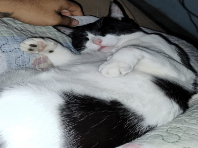

Mel
Encontrada em uma caixa de papelão, estava doente e assustada. Hoje, é uma gata feliz e adora cochilar no sol!
Adotado em: Janeiro/2024Cada gatinho que passa pela ONG Frajola deixa uma marca em nossos corações. Conheça algumas das lindas histórias de superação e amor:
Encontrada em uma caixa de papelão, estava doente e assustada. Hoje, é uma gata feliz e adora cochilar no sol!
Adotado em: Janeiro/2024O nome da ONG foi em homenagem a ele! Resgatado após ser atropelado. Passou por cirurgia e reabilitação. Hoje corre pela casa nova.
Adotado em: Fevereiro/2024Uma gata preta resgatada de uma colônia. É um amor de gata, mas não gosta de cachorros! Encontrou um lar sem cães e está muito feliz.
Adotado em: Março/2024Um gigante gentil! Resgatado em condições precárias. Hoje é um gato gordinho, muito dócil e adora um colo.
Adotado em: Abril/2024Encontrado muito magro procurando comida no lixo. Hoje está gordinho e feliz, adora brincar com bolinhas de papel!
Adotado em: Maio/2024Foi resgatada de uma casa com muitos animais. Chegou tímida, mas hoje é a gata mais carinhosa e brincalhona!
Adotado em: Junho/2024Você também pode ajudar a transformar a vida de um gatinho!
Quero Ajudar!